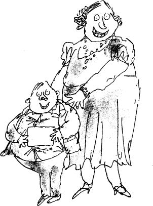
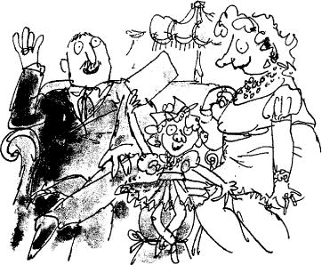

The very next day, the first Golden Ticket was found. The finder was a boy called Augustus Gloop, and Mr Bucket’s evening newspaper carried a large picture of him on the front page. The picture showed a nine-year-old boy who was so enormously fat he looked as though he had been blown up with a powerful pump. Great flabby folds of fat bulged out from every part of his body, and his face was like a monstrous ball of dough with two small greedy curranty eyes peering out upon the world. The town in which Augustus Gloop lived, the newspaper said, had gone wild with excitement over their hero. Flags were flying from all the windows, children had been given a holiday from school, and a parade was being organized in honour of the famous youth.
‘I just knew Augustus would find a Golden Ticket,’ his mother had told the newspapermen. ‘He eats so many bars of chocolate a day that it was almost impossible for him not to find one. Eating is his hobby, you know. That’s all he’s interested in. But still, that’s better than being a hooligan and shooting off zip guns and things like that in his spare time, isn’t it? And what I always say is, he wouldn’t go on eating like he does unless he needed nourishment, would he? It’s all vitamins, anyway. What a thrill it will be for him to visit Mr Wonka’s marvellous factory! We’re just as proud as anything!’
‘What a revolting woman,’ said Grandma Josephine.
‘And what a repulsive boy,’ said Grandma Georgina.
‘Only four Golden Tickets left,’ said Grandpa George. ‘I wonder who’ll get those.’
And now the whole country, indeed, the whole world, seemed suddenly to be caught up in a mad chocolate-buying spree, everybody searching frantically for those precious remaining tickets. Fully grown women were seen going into sweet shops and buying ten Wonka bars at a time, then tearing off the wrappers on the spot and peering eagerly underneath for a glint of golden paper. Children were taking hammers and smashing their piggy banks and running out to the shops with handfuls of money. In one city, a famous gangster robbed a bank of a thousand pounds and spent the whole lot on Wonka bars that same afternoon. And when the police entered his house to arrest him, they found him sitting on the floor amidst mountains of chocolate, ripping off the wrappers with the blade of a long dagger. In far-off Russia, a woman called Charlotte Russe claimed to have found the second ticket, but it turned out to be a clever fake. The famous English scientist, Professor Foulbody, invented a machine which would tell you at once, without opening the wrapper of a bar of chocolate, whether or not there was a Golden Ticket hidden underneath it. The machine had a mechanical arm that shot out with tremendous force and grabbed hold of anything that had the slightest bit of gold inside it, and for a moment, it looked like the answer to everything. But unfortunately, while the Professor was showing off the machine to the public at the sweet counter of a large department store, the mechanical arm shot out and made a grab for the gold filling in the back tooth of a duchess who was standing near by. There was an ugly scene, and the machine was smashed by the crowd.
Suddenly, on the day before Charlie Bucket’s birthday, the newspapers announced that the second Golden Ticket had been found. The lucky person was a small girl called Veruca Salt who lived with her rich parents in a great city far away. Once again Mr Bucket’s evening newspaper carried a big picture of the finder. She was sitting between her beaming father and mother in the living room of their house, waving the Golden Ticket above her head, and grinning from ear to ear.
Veruca’s father, Mr Salt, had eagerly explained to the newspapermen exactly how the ticket was found. ‘You see, boys,’ he had said, ‘as soon as my little girl told me that she simply had to have one of those Golden Tickets, I went out into the town and started buying up all the Wonka bars I could lay my hands on. Thousands of them, I must have bought. Hundreds of thousands! Then I had them loaded on to trucks and sent directly to my own factory. I’m in the peanut business, you see, and I’ve got about a hundred women working for me over at my place, shelling peanuts for roasting and salting. That’s what they do all day long, those women, they sit there shelling peanuts. So I says to them, “Okay, girls,” I says, “from now on, you can stop shelling peanuts and start shelling the wrappers off these chocolate bars instead!” And they did. I had every worker in the place yanking the paper off those bars of chocolate full speed ahead from morning till night.
‘But three days went by, and we had no luck. Oh, it was terrible! My little Veruca got more and more upset each day, and every time I went home she would scream at me, “Where’s my Golden Ticket! I want my Golden Ticket!” And she would lie for hours on the floor, kicking and yelling in the most disturbing way. Well, I just hated to see my little girl feeling unhappy like that, so I vowed I would keep up the search until I’d got her what she wanted. Then suddenly… on the evening of the fourth day, one of my women workers yelled, “I’ve got it! A Golden Ticket!” And I said, “Give it to me, quick!” and she did, and I rushed it home and gave it to my darling Veruca, and now she’s all smiles, and we have a happy home once again.’
‘That’s even worse than the fat boy,’ said Grandma Josephine.
‘She needs a really good spanking,’ said Grandma Georgina.
‘I don’t think the girl’s father played it quite fair, Grandpa, do you?’ Charlie murmured.
‘He spoils her,’ Grandpa Joe said. ‘And no good can ever come from spoiling a child like that, Charlie, you mark my words.’
‘Come to bed, my darling,’ said Charlie’s mother. ‘Tomorrow’s your birthday, don’t forget that, so I expect you’ll be up early to open your present.’
‘A Wonka chocolate bar!’ cried Charlie. ‘It is a Wonka bar, isn’t it?’
‘Yes, my love,’ his mother said. ‘Of course it is.’
‘Oh, wouldn’t it be wonderful if I found the third Golden Ticket inside it?’ Charlie said.
‘Bring it in here when you get it,’ Grandpa Joe said. ‘Then we can all watch you taking off the wrapper.’